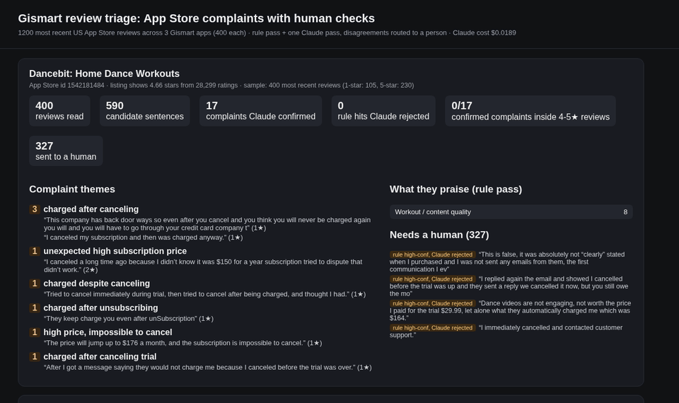

Built by Gursimar Singh, Nov 2026, on real public data

I pulled the 400 most recent US App Store reviews for Dancebit, Luvly and Famio, 1,200 in total. Keyword rules flag billing and cancel issues, Claude confirms which sentences are real complaints, and disagreements go to a person. 306 of Famio's 400 most recent reviews were 1 star, and Claude confirmed 35 of 42 packed billing and cancel sentences, including charges after cancel and no way to cancel in the app.
What I'd improve next: sample mid-star and 5-star reviews too, and score refund-response time, since this pack was almost all 1-star billing text.